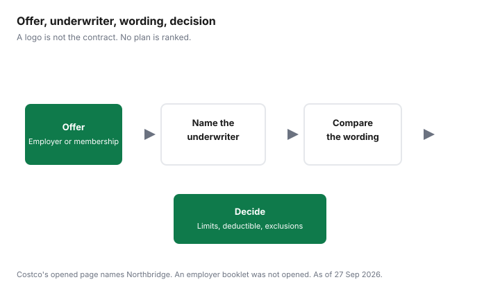

Pets · Canada
Group and Membership Pet Insurance in Canada: Employer and Costco Offers Explained
A logo on a benefits portal or a warehouse-club page is a door. It is not the contract. Group and membership pet insurance in Canada is still a policy issued by an insurer, with limits, a deductible, exclusions, and a pre-existing definition. The discount, if one is printed, is one line. This page explains the offer types that were actually opened, and it says plainly where an employer booklet was not opened. Whether any pet policy is worth the premium is the value guide. How to read the clauses is the policy guide. Nothing here ranks an insurer.
Disclosure: Pet insurance quote and comparison referral types are an offer type. Saving Optimizer may earn a commission if we later add a partner link. We do not currently claim a partnership with any insurer, broker, comparison site, employer plan, or warehouse club. We do not rank plans. Education only, not insurance advice. The wording you are offered is the contract.
Key takeaways
- The Pets Plus Us page for Costco Canada members, checked 27 Sep 2026, names Northbridge General Insurance Corporation as underwriter. Costco is not described as the insurer. The page says the advertisement is not an offer by Costco Wholesale Canada Ltd.
- That page prints 10 percent off for Gold Star and non-Executive Business members, 15 percent off for Executive members, and a complimentary first month for new Pets Plus Us clients. Discounts may vary by province and territory.
- The same advertisement offers an accident plan at $5,000 a year and accident-and-illness coverage at $7,500 or $15,000 a year. Those are that offer’s limits, not an industry rule.
- No employer pet-insurance booklet is listed here. Payroll deduction, a group percent, and what happens when you leave the job are questions for the administrator, not figures on this page.
- NAPHIA’s 2025 highlights do not publish a group-discount average. Compare limits and the pre-existing sentence before you treat a percent as cheaper coverage. The plan-type guide is the product label.
How group and membership pet insurance differs from buying direct
Buying direct means you ask an insurer or its broker for a quote in your own name. A membership offer means a club, association, or retailer introduces you to an insurer and may print a preferred rate for people who hold that membership.
A group offer through an employer means the employer’s benefits menu includes a pet policy, often with payroll deduction. In all three cases the contract is still between you and an insurer, unless the booklet says something narrower, such as a master policy the employer holds. This page did not open an employer master policy, so it will not describe one as if it had.
The industry averages do not split “group” from “individual.” NAPHIA’s 2026 highlights, checked 27 Sep 2026, price accident-only, accident-and-illness, and embedded wellness for Canada in 2025. They do not publish a column for employer plans or warehouse clubs. A membership discount can sit on top of one of those product types. It does not create a fourth type. Use the plan-type guide for the glossary, then use this page to identify who actually insures the animal.
Employer voluntary benefits: payroll deduction and portability when you leave
Voluntary means you opt in. Payroll deduction means the premium leaves your pay.
Neither fact tells you the limit, the deductible, or whether the policy survives your last day. Ask the benefits administrator, in writing, for the insurer’s name, the underwriter if it is different, the product name, and the certificate or user guide. Ask whether deduction is the only way to pay, and what happens to a missed pay if you are on leave. Ask whether the policy is portable: can you keep it, at what price, by what date, and does a new application re-open pre-existing conditions? If the answer is “ask the insurer,” ask the insurer and keep the reply. No percent off is stated here, because no employer page that printed one is listed here.
Do not confuse this with a human health spending account. The employer-benefits guide is the account for eligible human health expenses. A pet premium is not automatically one of those expenses. Read the account’s list. A pet policy on the same portal is a separate contract. The vet-bill guide is how the clinic invoice works if the policy does not pay.
Membership offers (warehouse clubs, associations): who the actual insurer is
The page checked for Costco Canada members is titled as Pets Plus Us pet insurance. It says policies are underwritten by Northbridge General Insurance Corporation, distributed by PTZ Insurance Services Ltd., and by Société d’Assurances Collectives (Sodaco) Inc. in Quebec.
Sodaco’s registration number with the Autorité des marchés financiers is printed on that page as 603622. The page says the insurance is available in all provinces and territories, and that the text should not be interpreted as an offer or solicitation of insurance products by Costco Wholesale Canada Ltd. The underwriter is the name to write on your comparison sheet. The club is the door.
The preferred rate on that page is specific. Gold Star and Business members who are not Executive members receive 10 percent off. Executive members receive 15 percent off. The first month is complimentary for new Pets Plus Us clients. The footnote says specific products, features, rates, and discounts may vary by province and territory, eligibility, and are subject to change. A 15 percent line on a banner is not your price until the quote shows it. The accident plan is described as $5,000 a year for unexpected injuries, with examples that include a broken bone, a cut, or being hit by a car. Accident-and-illness coverage is described as $7,500 or $15,000 a year. Those limits are the offer’s, not NAPHIA’s averages. NAPHIA’s 2025 accident-and-illness averages are $1,176 for dogs and $601 for cats. An average premium and an annual limit are different numbers. Do not subtract one from the other and call it a benefit.
What the advertisement refuses to decide
The same page says medical conditions that are noted, symptomatic, or diagnosed prior to enrollment, or during a waiting period, are pre-existing and not eligible for reimbursement. It says waiting periods, an annual deductible, coinsurance, benefit limits, and exclusions may apply, and that the user guide prevails over the advertisement. The brochures page repeats the underwriter’s name and says the information is summarized. Day counts for the waits were not on either page. The renewal guide is why those waits matter if you later leave this offer for another insurer.
Comparing apples to apples: limits, deductibles, exclusions
A fair comparison holds the animal, the deductible, the reimbursement percent, and the annual limit still, then looks at price. If the membership quote will only show $7,500 or $15,000 and the direct quote shows a different cap, write both caps down and stop pretending the monthly prices are the same product.
Exclusions travel with the wording. The Costco page’s pre-existing sentence is one version. A direct policy may use another. Hereditary conditions, dental, and exam fees are searches you run in both PDFs. The quote spreadsheet is the grid. It was built for household policies. The columns are the same kind of columns.
A complimentary first month is a promotion. Spread it across the year if you want a twelve-month cost, and confirm it appears on the payment schedule. Do not compare a first month at zero with a direct quote’s first month at the full premium and stop there. After month two, the comparison is the ongoing premium plus the limits. Association offers that were not opened are not described. If your professional body or club has a page, read the underwriter on that page the same way.
Questions to ask before enrolling
Ask these before you click buy. Who is the underwriter, and is the distributor a different company?
Is the price on the screen the membership rate, and which membership tier does it assume? What is the annual limit, in dollars, for the plan name you selected? What is the deductible and the reimbursement percent? What does the pre-existing sentence say, including waiting periods? What is excluded that you already know this animal needs? If this is an employer offer, what happens on the last day of work? Can you keep the policy, and does keeping it trigger a new application? Where is the user guide, and does it prevail over the web page? If any answer is “see the guide” and the guide is not in your hands, you are not ready to enrol.
Comparison checklist table
| Question | Why it matters | Where to find it |
|---|---|---|
| Who is the underwriter? | The club or employer logo is not the company that pays the claim. | Offer page and the specimen. On the Costco page checked 27 Sep 2026: Northbridge General Insurance Corporation. |
| Who distributes it, and in which province? | Quebec distribution can be a different firm. The page named Sodaco there. | Footer of the offer. Confirm the name on your quote. |
| What membership rate is actually on the quote? | The page prints 10 percent and 15 percent by tier, and says rates may vary. | The quote, not the banner. First month complimentary is a separate line for new Pets Plus Us clients. |
| What is the annual limit? | A lower premium with a lower cap is a different product. | The offer describes accident coverage of $5,000 and accident-and-illness of $7,500 or $15,000. Your screen may differ. |
| What is pre-existing, and what are the waits? | A discount does not restore a condition the wording excludes. | User guide. The advertisement says the guide prevails and does not print day counts. |
| What happens if I leave the employer? | Payroll deduction can stop before you have a new policy. | The booklet this page did not open. Ask the administrator in writing. |
| Is a human health spending account involved? | A pet premium is not automatically an eligible human health expense. | The account’s own list. The employer-benefits guide is that list, not this policy. |

Sources & date stamps
- Pets Plus Us, “Pet Insurance for Costco Canada Members,” and the brochures and guides page, checked 27 Sep 2026. Underwriter: Northbridge General Insurance Corporation. Distributors: PTZ Insurance Services Ltd. and Sodaco in Quebec (Reg#603622 as printed). Preferred rates 10 percent and 15 percent as cited. Complimentary first month for new clients. Accident limit $5,000. Accident-and-illness limits $7,500 or $15,000. Pre-existing sentence. User guide prevails. Not an offer by Costco Wholesale Canada Ltd., as that page states. Copyright line on the page says 2025.
- NAPHIA 2026 highlights, PDF checked 27 Sep 2026. No group-discount table. Canadian accident-and-illness averages $1,176 and $601 are product averages, not limits.
- No employer pet-insurance booklet, rate sheet, or portability clause was opened. No percent for a payroll plan is stated.
Frequently asked questions
Is employer pet insurance cheaper?
Not necessarily. No employer booklet was opened for this page, so no payroll discount is stated. The Costco membership page does print a preferred rate: 10 percent for Gold Star and non-Executive Business members, and 15 percent for Executive members, plus a complimentary first month for new Pets Plus Us clients. A discount does not change exclusions. Compare the same deductible, reimbursement, and limit on a direct quote before you treat the percent as the decision.
What happens to group pet insurance if I leave my job?
The portability rule was not in a booklet this page checked. Ask whether the policy is yours, whether payroll deduction stops on your last day, and whether a conversion has a deadline and a new look at pre-existing conditions. Get the answers in writing before you leave. A gap between the group policy and the next contract is the same trap as any other switch.
Who underwrites Costco pet insurance in Canada?
The Pets Plus Us page for Costco Canada members, checked 27 Sep 2026, says the policies are underwritten by Northbridge General Insurance Corporation and distributed by PTZ Insurance Services Ltd., and by Société d’Assurances Collectives (Sodaco) Inc. in Quebec. The same page says the advertisement should not be read as an offer by Costco Wholesale Canada Ltd. Confirm the underwriter on the specimen you are given, not only on the banner.
Is a group discount worth it?
A printed discount is worth putting on a spreadsheet. It is not worth assuming. If the group contract excludes a condition a direct contract would cover, or if the limit is lower, the percent off is not the comparison. The NAPHIA highlights do not publish a group-discount average. This page does not rank the Costco offer against any other logo.
Can I switch from group to individual coverage?
You can ask for an individual quote. The new contract applies its own pre-existing definition and its own waiting periods to history the clinic already has. Keep the group policy in force until the new one has started, if the wording lets you, and confirm that leaving the employer does not cancel you during that gap. Read both definitions side by side. This page does not name a destination insurer.
Researched and drafted with AI assistance and fact-checked against official Canadian sources. How we create content.